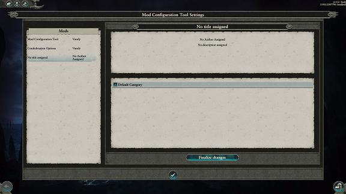
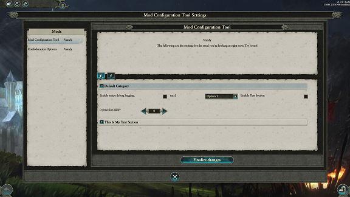
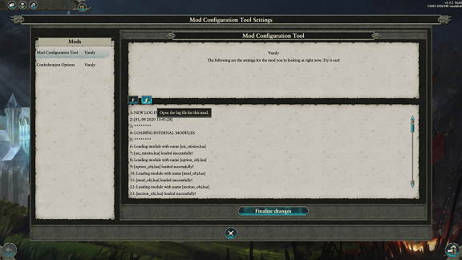

MCT, the Mod Configuration Tool
FOREWORD - BETA
Keep in mind this is just a quick write-up for the beta testing version of MCT. The beta is not feature-complete, some stuff might be wrong, and everything is subject to change. If you find issues with MCT, have requests, or something isn’t clear - please just ping me and I’ll help you out!
Intro
Hallo. MCT stands for Mod Configuration Tool, an in-game tool that allows Lua modders to make some settings for their mods that can be decided within the UI created from MCT. It includes all functionality needed for making options, reading them, saving them, loading them, and so forth. All mods really need to do is define their options, settings, and then hook them into their code.
How It Works
Before we go on, we've got to cover how MCT works at its core, so there's no confusion.
The MCT is designed to be fairly simple to use for others, as it does 70% of the heavy lifting - all the UI design, it reads text easily through localisation keys, it saves and reads and sends settings.
When the game is first loaded with MCT, it creates a local mct_settings.lua file on disk, in the same folder as the Warhammer2.exe. Don't touch that .lua file! It is the file used to read any settings that were set in the frontend UI, and "save" those settings into the campaign. When the UI is first "finalized", that .lua file is created, and will be edited by MCT as time goes whenever settings are changed.
That file is only used in frontend, and for the first load of a campaign. After the campaign is created, all the settings saved in the mct_settings.lua file are then saved into the campaign save file via cm:set_saved_value(), and they're read through cm:get_saved_value() internally from then on.
There is a separation internally for MCT. There is one file to define the settings you want for your mod in script/mct/settings/?.lua, and your .lua files elsewhere - ie., script/campaign/mod/?.lua - will be used to read the settings that the player has selected for your mod locally, using a handful of listeners and methods that let you easily read the current state of things.
Create Settings File
To start off - make a file in script/mct/settings/?.lua. Give it a unique name, since two files of the same name in this folder will conflict.
The first line of your file should be:
local mct_mod = mct:register_mod("my_mod")
Wherein mct_mod can be replaced with whatever, it's just a local variable, and "my_mod" should be a unique indentifier for your specific mod. Once that single line is done, when you open up the Mod Configuration Tool, you'll see a new mod - that's yours!

We'll cover localisation for the mct_mod further down; for now, options!
The mct_option object is the real bulk of the mod. They're the actual settings you can interact with and save to load up a game with changed settings and the like. There are currently only three types of options - checkbox, dropdown & slider. As of writing, there are two mid-hookup: text input and tweakers (and/or buttons). The documentation will be edited once those are incorporated.
To make a new mct_option, you use the following:
local mct_mod = mct:register_mod("my_mod") local mct_option = mct_mod:add_new_option("option_key", "option_type")
Where, once more, option_key has to be unique (to your mct_mod). option_type is either "checkbox", "dropdown" or "slider".
First up, if you are using a dropdown, you'll want to use mct_option:add_dropdown_value or mct_option:add_dropdown_values, to add the separate dropdown values for the box. This'll create the actual values within the dropdown box. There isn't an upper limit, but I recommend not doing too much, it'll start looking potentially ugly above 6 or 8 or so, depending on resolution.
Alternatively, if you're using a slider, you'll want to use mct_option:slider_set_min_max, mct_option:slider_set_step_size, and/or mct_option:slider_set_precision. Those'll give you more fine control over the specifics of the slider.
Next up, you'll want to set a default value.
local mct_mod = mct:register_mod("my_mod") local mct_option = mct_mod:add_new_option("my_cool_option", "dropdown") mct_option:add_dropdown_value("value1", "My Dropdown Value", "This dropdown value does this.", true) mct_option:add_dropdown_value("value2", "Another Dropdown Value", "This dropdown value does something.", false) -- Default to "Another Dropdown Value" mct_option:set_default_value("value2") -- OR -- local mct_option = mct_mod:add_new_option("my_cool_checkbox", "checkbox") -- Default to unchecked mct_option:set_default_value(false) -- OR ALSO -- local mct_option = mct_mod:add_new_option("look_mom_a_slider", "slider") mct_option:slider_set_min_max(0, 100) mct_option:slider_set_step_size(1) -- Default to 10 mct_option:set_default_value(10)
There's not much beyond that that's needed to really expand functionality, though you can jump through the API to find any extra methods that you'd like. Before we get into reading the settings in-campaign, we're going to do localisation.
Localisation
Localisation with MCT is fairly robust. There are three options available for you - automatically read localisation keys, script-applicable localisation keys, and script-applicable loose text (ie. "My Localisation").
For the mct_mod object, the auto-read keys are:
-mct_[mct_mod_key]_title-mct_[mct_mod_key]_author-mct_[mct_mod_key]_description
Alternatively, you can use the following methods in script:
local mct_mod = mct:register_mod("my_mod") mct_mod:set_title("My Title") mct_mod:set_author("Vandy") mct_mod:set_description("My cool mod is a very cool mod, thank you for asking.")
And, lastly, you can use the same methods to supply dynamic localisation keys instead:
local mct_mod = mct:register_mod("my_mod") mct_mod:set_title("ui_text_replacements_localised_text_my_mod_title", true) mct_mod:set_author("Vandy") -- doesn't accept localisation mct_mod:set_description("ui_text_replacements_localised_text_my_mod_desc", true)
Supply those methods with true and they will check for a localised string with the loc key you supply.
For the mct_option object, the auto-read keys are:
-mct_[mct_mod_key]_[mct_option_key]_text-mct_[mct_mod_key]_[mct_option_key]_tooltip
Alternatively, you can use the following methods in script:
local mct_mod = mct:register_mod("my_mod") local my_option = mct_mod:add_new_option("test_option", "checkbox") my_option:set_text("My Cool Option") my_option:set_tooltip_text("My cool option does this specifically, enjoy!")
And likewise, you can supply localisation keys instead through script:
local mct_mod = mct:register_mod("my_mod") local my_option = mct_mod:add_new_option("test_option", "checkbox") my_option:set_text("ui_text_replacements_localised_text_my_option_text", true) my_option:set_tooltip_text("ui_text_replacements_localised_text_my_option_tooltip_text", true)
Extra Stuff - Sections and Logging
This header is all about less important stuff for functionality that still needs some sort of documentation!
In MCT, you can create sections to group a bunch of options together visually, and those sections can be opened/closed via the user and through some modder interfacing as well.

By default, all MCT options are a part of a default section called, well, "default". This is created automatically. If you're okay with keeping everything in the one category that can open/close on its own, you don't have to do anything at all and can just jump ship to the next header below.
If you'd like a second section, however, you simply use:
local mct_mod = mct:register_mod("my_mod") local new_section = mct_mod:add_new_section("my_section")
And that'll be it! All options added from that point onward will be defaulted to "my_section" instead of "default".
If you'd like to manually add options to specific sections, you can use:
local option_a = mct_mod:add_new_option("option_a", "dropdown") local new_section = mct_mod:add_new_section("my_section") option_a:set_assigned_section("my_section")
The section has to exist for the option to be added to it, using that function, for the time being.
There are several pretty helpful functions in mct_section's, which can be seen in the page mct_section.
There's also now some internal functionality to read log files within MCT. An mct_mod can add a logging file using mct_mod:set_log_file_path. When a log file is added in, there will be an available tab that will straight up just display the lines from that log file.

Hook Into Scripts
The above is enough to get the UI in the frontend and in the campaign to populate, have localisation, and do stuff, but the settings won't change anything on their own! We're gonna take a bit to look into hooking MCT into your scripts, making MCT an optional mod or a required one, and responding to new settings.
In your own .lua files - in script/campaign/mod/ or wherever you've got them at - there's a couple functionalities and listeners you can set up to quickly and easily read the currently saved MCT settings.
A good quick example is the file script/_lib/mod/zzz_mct_options.lua in the MCT pack.
The first event that will help a lot is the "MctInitialized" event.
core:add_listener(
"bloop",
"MctInitialized",
true,
function(context)
local mct = context:mct()
local my_mod = mct:get_mod_by_key("my_cool_mod")
end,
true
)
MctInitialized is triggered pretty early on, fairly before FirstTickAfterWorldCreated, so do not do model edits off of this function! It's a great way to quickly read the settings from MCT and pass them locally, though.
-- default settings for the mod. If MCT is never enabled, or the player doesn't change settings, then do_thing_one and do_thing_two will remain true! local settings = { do_thing_one = true, do_thing_two = true, } -- harmless listener, won't do anything if MCT isn't enabled. Triggered around LoadingGame, *do not to model edits here* core:add_listener( "bloop", "MctInitialized", true, function(context) -- get the mct object local mct = context:mct() -- get the mct_mod object with the key "my_cool_mod" local my_mod = mct:get_mod_by_key("my_cool_mod") -- get the mct_option object with the key "do_thing_one", and its finalized setting - reading from the mct_settings.lua file if it's a new game, or the save game file if it isn't local do_thing_one = my_mod:get_option_by_key("do_thing_one") local do_thing_one_setting = do_thing_one:get_finalized_setting() -- ditto local do_thing_two = my_mod:get_option_by_key("do_thing_two") local do_thing_two_setting = do_thing_two:get_finalized_setting() -- replace the default settings with the finalized settings through MCT settings.do_thing_one = do_thing_one_setting settings.do_thing_two = do_thing_two_setting end, true ) -- do our model edits when it's safe, on first_tick! cm:add_first_tick_callback(function() -- if the first setting is set to true ... if settings.do_thing_one then -- trigger a function for "do thing one", if it's set as true through MCT end -- ditto ... if settings.do_thing_two then -- ditto end end)
Using the above should be enough for most mods. I recommend, if you don't want the settings to be changed mid-campaign, to use mct_option:set_read_only after reading the finalized settings and then responding to them. That way, the user won't be able to edit the settings through MCT, only read them through the UI.
If you want settings changeable mid-campaign, there is one more listener provided for ease-of-use:
core:add_listener(
"bloop",
"MctOptionSettingFinalized",
true,
function(context)
local mct = context:mct()
local mct_mod = context:mod()
local mct_option = context:option()
local new_settings = context:setting()
end,
true
)
This event triggers any time an editable option (not-read-only) is changed through the "Finalize Settings" dialogue within MCT. That allows you to give users way more flexibility within a campaign, if you want that flexibility!
There is also the event, "MctFinalized", that triggers whenever the "Finalize Settings" button is pressed, but triggers like more of a global action rather than the "MctOptionSettingFinalized" event, which triggers only for a single option at a time, and only if it's changed.
core:add_listener(
"bloop",
"MctFinalized",
true,
function(context)
local mct = context:mct()
local mod = mct:get_mod_by_key("my_mod")
local option = mod:get_option_by_key("my_option")
local setting = option:get_finalized_setting()
end,
true
)
Other Events
This section will be expanded a lot more in the near future when events are expanded a lot. Planning on making the mod a lot more event-based, since it's just the easiest way of doing it for me and for y'all.
For now, I have some new ones:
- MctPanelOpened
- MctPanelPopulated
- MctSectionVisibilityChanged
- MctNewOptionCreated
The first is triggered every time the MCT panel is opened. The second is triggered every time a new mod is selected within MCT, including when it is opened and the default MCT page is selected.
MctPanelOpened has two contexts: context:mct() for the MCT object proper, and context:ui_obj() for the UI object that powers all of MCT's UI. This isn't documented yet in the API, sorry. That'll come soon:tm:
MctPanelPopulated has three contexts: context:mct() (ditto), context:ui_obj() (double ditto), and context:mod() for the mct_mod object that matches the mod selected in the UI.
MctSectionVisibilityChanged is called every time a section changes its visibility, excluding its first creation. This is any time that mct_section:uic_visibility_change is called.
Its contexts are: context:mct(), context:mod(), context:section(), and context:visibility() (which is a boolean, true for visible).
MctNewOptionCreated is triggered every time mct_mod:add_new_option is called. This is mostly used for internal stuff, to trigger MCT popups.
Its contexts are: context:mct(), context:mod(), and context:option().
Multiplayer
Multiplayer works! How exciting!
It works by reading which player is the "host" in the frontend. That player's mct_settings.lua file is read on the initial load of the campaign, and the settings decided are sent to the client player to keep everything matched. From then on, only the host can edit settings in the MCT dialogues, and the client can only read the settings; the only exception being local-only settings, which aren't sent through to both players. The host and the client can both have different settings for a local-only setting.
Be very careful with local-only settings. This should be done for very simple stuff that won't cause desyncs - UI settings, script logging, stuff like that.
There is another new field for options, to make them mp-disabled. This straight up disables the option for MP, entirely. It won't show up, or exist in the MCT object, or anything, if the game is in multiplayer.
To make an option local-only:
option_obj:set_local_only(true)
To make an option mp-disabled:
option_obj:set_mp_disabled(true)
And to do the opposite, just use (false) instead!
Aside from the two new fields for options and a different way of loading, MP comes with a single, fairly big change. The timing is way off for everything. There's a technical reason that I don't really want to get into it, because I don't fully understand it and it kinda makes me mad, so suffice it to say - MctInitialized triggers way later in multiplayer than it does in singleplayer. MctInitialized triggers on FirstTickAfterWorldCreated, using the cm:add_pre_first_tick_callback() timing, so it should still run before cm:add_first_tick_callback()'s.
This means you can use MctInitialized to do model-edits, however.
Here's an example script I wrote while testing multiplayer, to show the considerations for timing:
-- default value, set to false local def = false -- init() is our startup function, which spawns a Rangerful army in KaK local function init() -- check the default value; if true, go on if def then -- get coords local x, y = cm:find_valid_spawn_location_for_character_from_settlement( "wh_main_dwf_dwarfs", "wh_main_the_silver_road_karaz_a_karak", false, true ) -- spawn our army cm:create_force( "wh_main_dwf_dwarfs", "wh_dlc06_dwf_inf_rangers_0,wh_dlc06_dwf_inf_rangers_0,wh_dlc06_dwf_inf_rangers_0,wh_dlc06_dwf_inf_rangers_0,wh_dlc06_dwf_inf_rangers_0,wh_dlc06_dwf_inf_rangers_0,wh_dlc06_dwf_inf_rangers_0,wh_dlc06_dwf_inf_rangers_0", "wh_main_the_silver_road_karaz_a_karak", x, y, true, nil ) end end -- on FirstTick, in singleplayer, trigger the above startup function cm:add_first_tick_callback(function() get_mct():log("first tick") if cm:is_new_game() and not cm:is_multiplayer() then init() end end) -- MctInitialized is called shortly after the Lua environment is safe to mess with, in MP core:add_listener( "MctModInitialized", "MctInitialized", true, function(context) local mct = context:mct() local mod = mct:get_mod_by_key("mct_mod") local option = mod:get_option_by_key("mct2") local setting = option:get_finalized_setting() def = setting -- since it's MP, we're running this code *VERY* close to when the add_first_tick_callback() above would be called -- which means, it's not guaranteed it will run in the sequence we want it to. It very rarely worked like I wanted it to, through testing -- so, I can just call our startup function right in this listener - IF AND ONLY IF it's multiplayer! if context:is_multiplayer() then init() end end, true )
Further Updates
As said - this is an early beta, releasing in the state so I can start getting feedback, requests, usage and the like. The program is mostly functional, but there may be bugs, unexpected responses, small things like that. I would very much like to get feedback on how it feels, how it works, and if there's anything I can do to help you make a better mod. If you have specific requests, reach out to me in the C&C Modding Den, in #just_vandy_things.
I have a lot of updates planned for this, but it's currently in a workable enough condition to be fine now:
Incorporate the new option types - text input and multi-buttons (ie. four buttons in a row, give AND|OR operations to them, etc)
Incorporate a "preset" type of option, which changes the setting for other options based on its setting. Y'know, a preset
Rewrite a lot of the foundation of the mod, make it a lot more dynamic for modders and super-usable
Fix up and expand a lot of the UI
Incorporate the SteamAPI, for things like reading Steam patch notes in-MCT